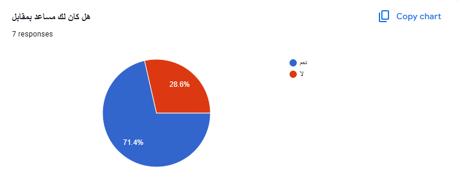
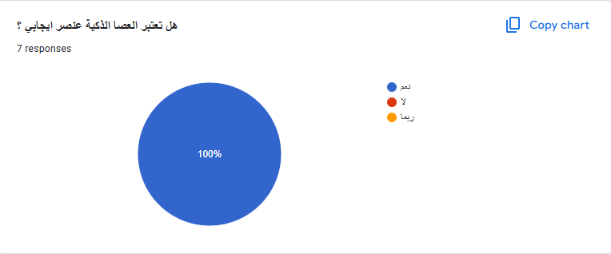
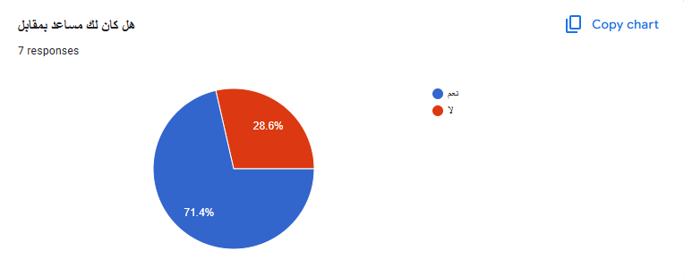
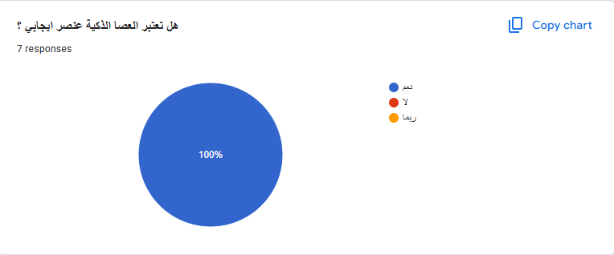
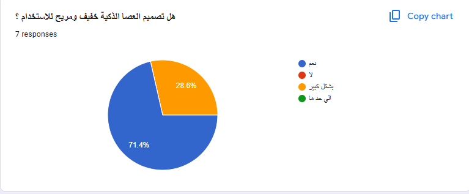
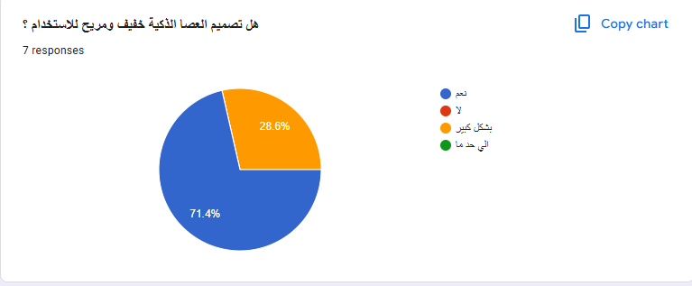

عين الكفيف الذكية - مشروع الأمل
عين الكفيف الذكية هو مشروع يهدف إلى تحسين حياة المكفوفين عبر استخدام تكنولوجيا متقدمة للتعرف على العوائق وإعطاء توجيهات صوتية فورية تساعدهم على التنقل بثقة وأمان.
من خلال شراكات مع خبراء في المجال، تم تطوير هذا الجهاز ليكون خفيفًا وسهل الاستخدام، مما يجعل حياة المكفوفين أكثر استقلالية.
عين الكفيف الذكية - نتائج استطلاع الرأي
تم اجراء استطلاع رأي علي بعض المكفوفين لمعرفة ارائهم بعد تجربة مشروع عين الكفيف الذكية لمعرفة ارائهم في المنتج للعمل علي تحسينه حتي يلائم جميع المستخدمين .
وجاءت نتائج الأستطلاع كما يظهر في الصور التالية


 



 
